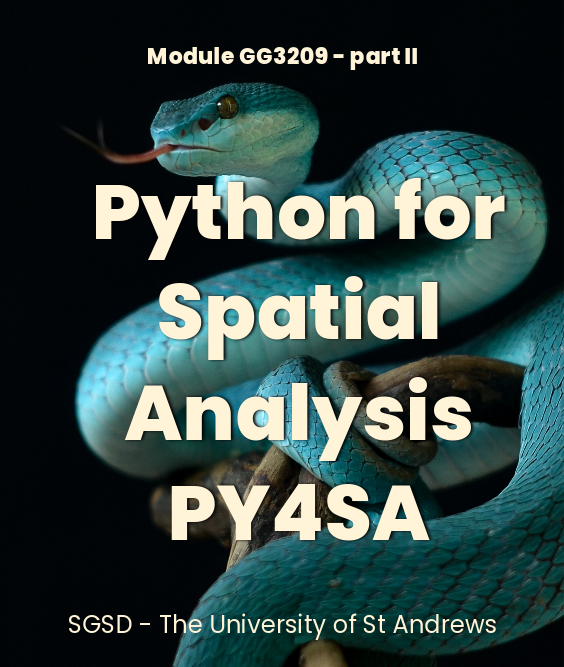
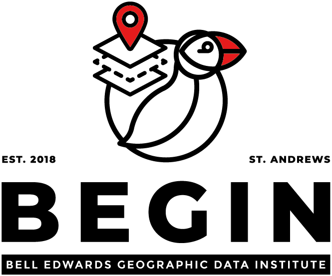

Getting started
Module GG3209 - Second Part

Welcome to the second part of the module of GG3209 Spatial Analysis with GIS. This part will take advantage of the initial part, which provided you with a solid understanding of spatial data formats (vector&raster) and use them to perform multiple types of analysis like the so-called Multi-Criteria Evaluation (MCE) using the widely popular Open-Source GIS tool, QGIS.
Now in this second part, you will be guided to install, handle and use another powerful tool in the geospatial field, Python. It is a free and open-sourced scripting language that was commonly used to automate tasks in the GIS world. Nowadays is one of the most popular programming languages, especially for GIScience. It is widely used in the private, public sectors and academia for cutting-edge research, where scripts, front-end and back-end components are created using this language. Python is also widley popular as a easy-to-code programming language to deploy new methods, share knowledge, list and fetch data, and run spatial analysis through multiple scientific fields.
In fact, most companies, or institutes where you probably want to apply once you finish your degree, will be happily interested in your development skills using Python and will validate your current ork in platforms like GitHub, where you can share and disseminate your project. At this stage whether you are student of Geography or Sustainable Development, you probably are familiar with R and its powerful capacity for spatial statistics. Now this module aims to introduce you Python which is mainly used for scalable and robust spatial analysis, front-end applications and process vast among of data. Every day, more packages and code-repositories are shared and maintained for easy use and installation, allowing developers or analysts from all backgrounds and expertise use and integrate them into their own code.
This part of the module and the lab (technical practice) are meant to be an introduction to Python and some of the spatial libraries. Like any other new language, you need to learn the basic rules (syntax) to write your own scripts, and soon with practice, you will become a python developer.
1 Content
The content included in this module stands to be a brief introduction to Python where you get familiar with multiple concepts up to now new for most of you, we will cover the basis of the programming logic, Python, Version Control (essential for reproducibility and open science) and some of the main libraries for geospatial analysis.
There are many other concepts and interesting exercises we could apply to learn and see the potential of Python in handling spatial data. However we have designed this part in the way you can see the difference between using GIS tools (user-interface based) and creating code to run script routines. As any other new language the best way to master it is through constant practice. So don’t get stress out if you find out this module difficult or different, you will slowly get better and efficient creating new scripts.
If you think this is the line of work you would like to pursue, you can learn more about in the module GG4257 - Urban Analytics: A Toolkit for Sustainable Urban Development where we have more time to properly described other libraries, more practical exercises, and use Python for more advance analysis.
The module is structured in the following lectures including the correspondent practical Lab.
- Introduction to Python, Jupyter Notebooks, and GIT
- Working with tabular data ( NumPy, Pandas)
- Working with spatial data in Python (GeoPandas, Rasterio)
- Clustering analysis
Advisement
Do not be afraid of failure or getting errors, even during the installation process; it has happened to all of us, regardless of the level of expertise or number of projects created. In programming, failure is part of the process; The key is to find the basis of any issue and understand how code, logic, and syntax work in harmony to get the results you are expecting.
All the work described here can be executed in the computer labs, ad we highly recommend you use that environment for all the practical exercises included in this book. However we have also integrated instructions for you to install a specific list of components to get an essential but scalable environment that allows you to write, clone, debug and execute code for this course.
Assessment
This part of the module is assessed by 100% coursework
University Staff
Module Co-ordinators: Dr Urška Demšar or Dr Fernando Benitez-Paez
Office hours: By appointment online and live during the labs
Lab assistants: Dr Charlotte van der Lijn , Ali Moayedi, Benjamin Ong, Georg Kodl
Our Research

If you want to know more about why spatial data holds the key to unlocking a deeper understanding of our planet and its intricate systems. Let’s BEGIN a spatial and data-driven conversation and be part of our multidisciplinary group in St Andrews. https://begin.wp.st-andrews.ac.uk/